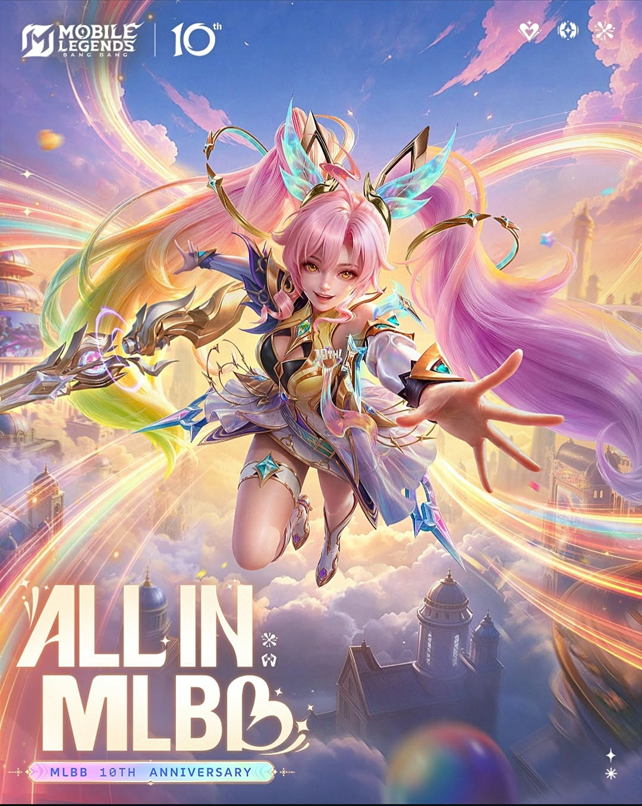
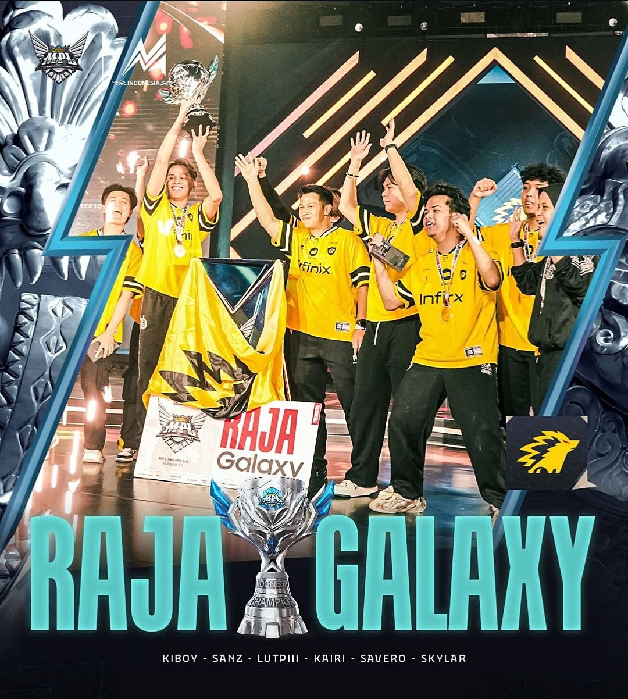

PROFIL SAYA

Bermain game merupakan salah satu kegiatan utama yang saya gemari untuk menyalurkan hobi sekaligus mengasah ketangkasan berpikir, koordinasi, dan strategi. Dari sekian banyak genre permainan yang ada, Mobile Legends menjadi salah satu game favorit yang paling sering saya mainkan di waktu luang.
Aktivitas ini tidak hanya berfungsi sebagai sarana hiburan untuk melepas penat setelah seharian beraktivitas, tetapi juga melatih konsentrasi tinggi, komunikasi efektif dalam kerja sama tim, serta kemampuan mengambil keputusan yang cepat di bawah tekanan situasi permainan yang dinamis.
Kecintaan saya yang mendalam terhadap dunia permainan digital ini secara alami menumbuhkan ketertarikan yang lebih luas terhadap perkembangan industri eSports dan kompetisi profesional. Di antara banyaknya tim yang berkompetisi,
ONIC merupakan tim yang paling saya kagumi dan ikuti perkembangannya.
Konsistensi performa yang mereka tunjukkan, disiplin tinggi, sportivitas, serta variasi strategi permainan yang cerdas selalu berhasil memikat perhatian saya. Mengikuti perjalanan karier dan perjuangan para atlet eSports di
ONIC memberikan motivasi tersendiri,
sekaligus memperluas wawasan saya mengenai bagaimana sebuah hobi bermain game dapat berkembang menjadi industri profesional yang menjunjung tinggi prestasi dan sportivitas.
MATERI

ONIC (atau dikenal secara luas sebagai
ONIC Esports) adalah salah satu organisasi olahraga elektronik (eSports) profesional yang paling terkemuka dan disegani di kawasan Asia Tenggara, dengan basis pendukung yang sangat besar di Indonesia dan Filipina. Sejak didirikan pada tahun 2018, organisasi ini telah berkembang pesat dan membangun reputasi yang solid, terutama berkat pencapaian gemilang dari divisi
Mobile Legends: Bang Bang (MLBB) yang menjadi identitas utama mereka dengan
lambang ikonik landak kuning. Filosofi dan lambang tersebut sering kali diasosiasikan dengan ketahanan serta ketajaman strategi yang mematikan di dalam arena pertempuran.
Dalam rekam jejak kompetitifnya di kancah nasional maupun internasional,
ONIC telah mencatatkan berbagai prestasi yang luar biasa membanggakan. Beberapa pencapaian penting yang berhasil diraih di antaranya adalah beberapa kali mendominasi takhta juara dalam ajang
Mobile Legends Professional League (MPL) Indonesia, meraih gelar juara pada turnamen Piala Presiden, hingga menaklukkan panggung internasional seperti ajang
Mobile Legends Southeast Asia Cup (MSC).
Keberhasilan yang konsisten ini tentu tidak datang dengan sendirinya, melainkan didukung oleh sistem manajemen yang profesional, coaching staff yang handal dalam meracik strategi, serta dedikasi serta kedisiplinan tingkat tinggi dari para atlet profesional yang memperkuat jajaran roster ONIC dari musim ke musim.